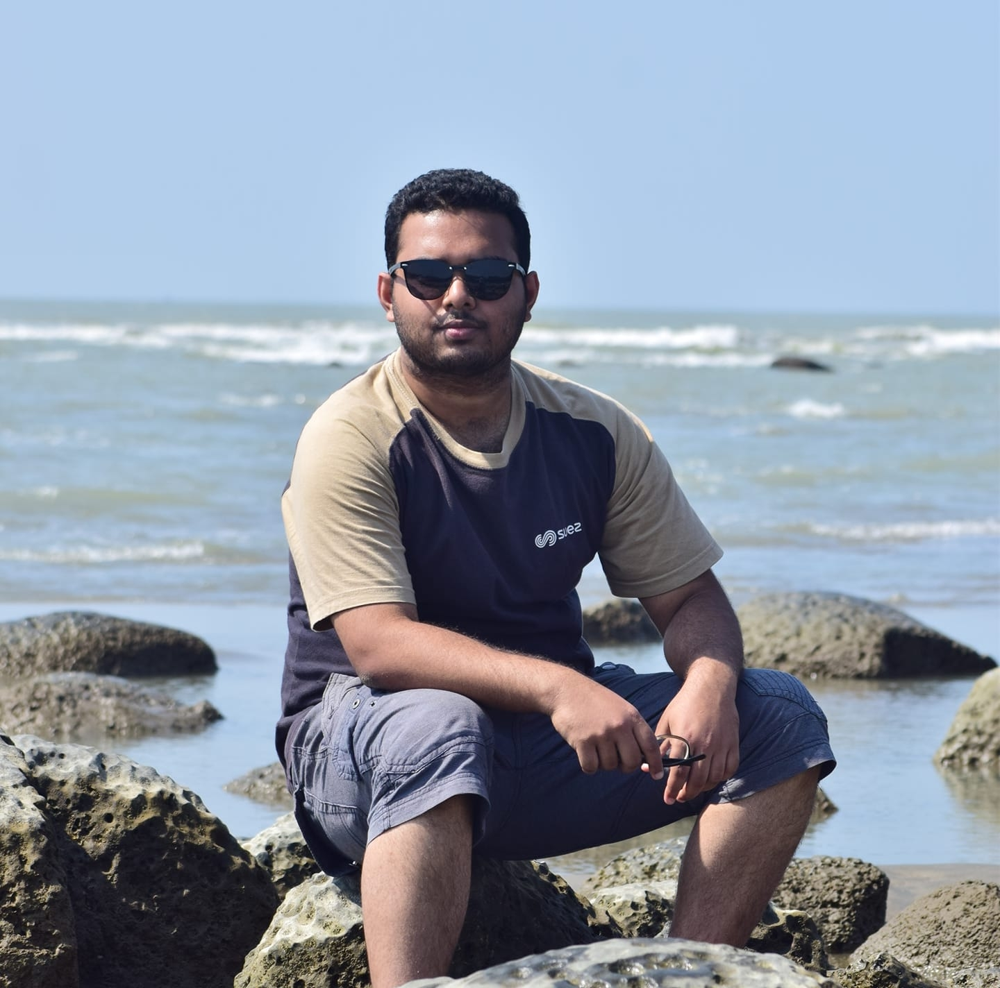

Profile
- Name :Yeasin Fiyaz
- Sex : Male
- Age : 21 y/o
- Date of Birth: 21th December, 2000
- Nationality : Bangladeshi
- Address : 20/F/1, North Tolarbagh Residential Area, Ansar Camp, Mirpur, Dhaka
Family
- Father’s Name : Md. Ibrahim Ali Miah
- Mother’s name : Fatema Jahan
Hobbies
- ▸ Gardening
- ▸ Playing video games
- ▸ Watching movies and cycling
Interests
- ▸ Going on long trips
- ▸ Playing Games
- ▸ Listening to music
A punctual and hard working guy studying Computer Science and Engineering with the goal to serve my country with my full potentiality.
Information
Activities
- ▸ BRAC University Computer Club
- ▸ BRAC University Communication and language Club
Educational Qualifications
- Bachelor of Science. (2021-Ongoing)
Computer Science and Engineering, Brac University.
- Higher Secondary School and Certificate. (2020)
School: Engineering University School and College, Buet Campus, Dhaka
- Secondary School and Certificate. (2018)
School: Engineering University School and College, Buet Campus, Dhaka
"The way to get started is to quit talking and begin doing."
- Walt Disney